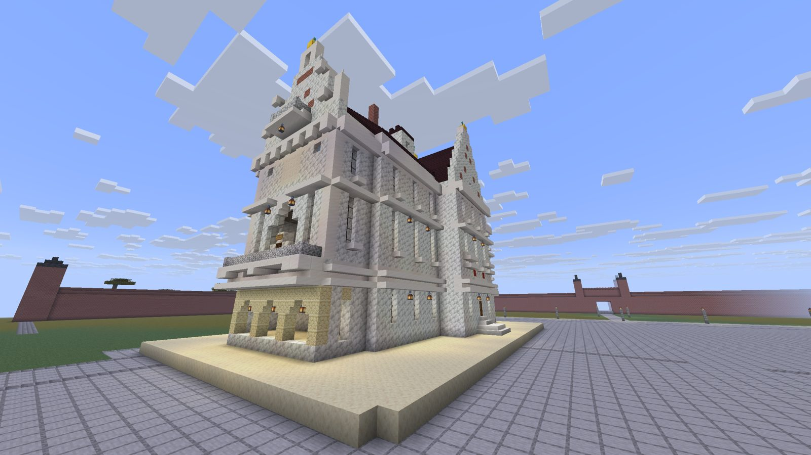
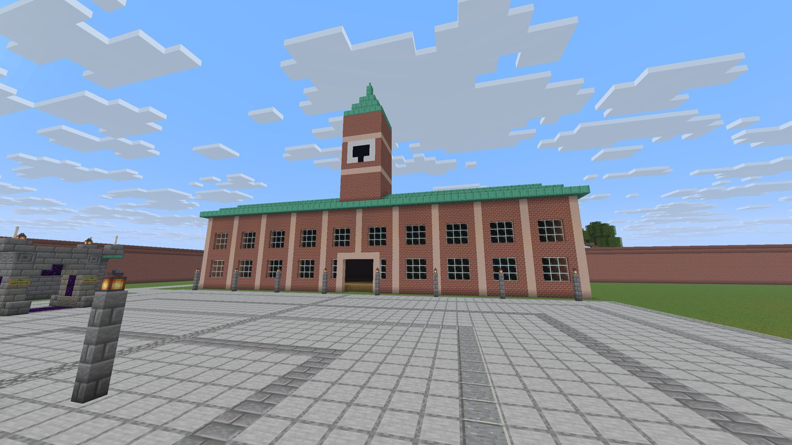
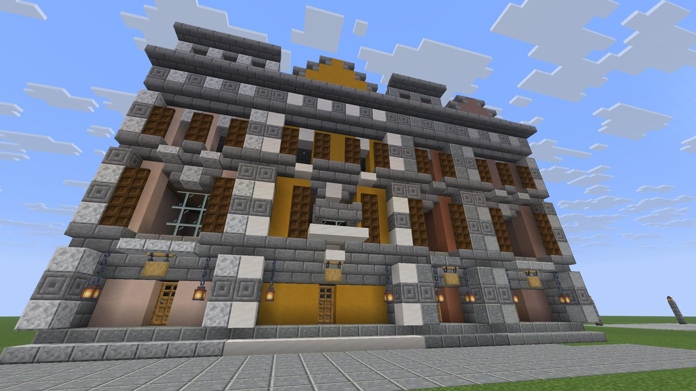
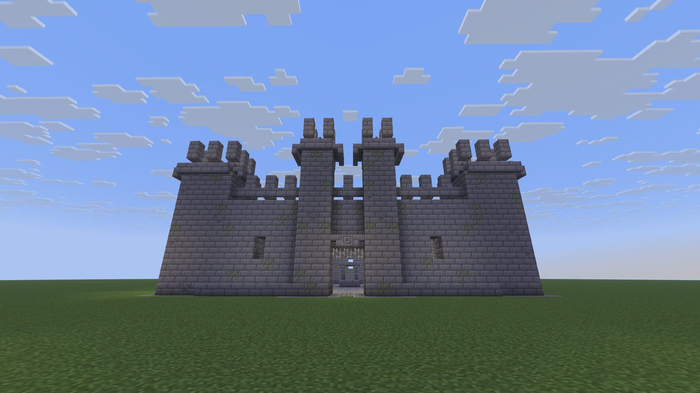
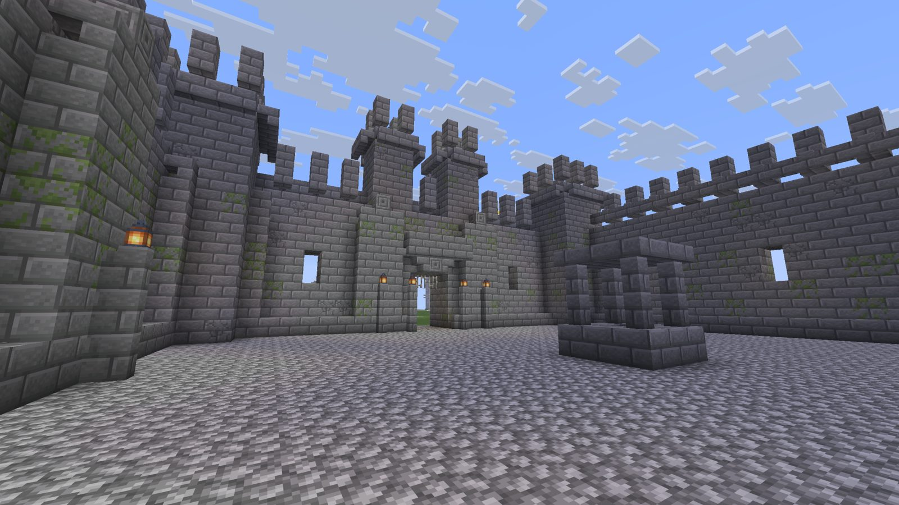
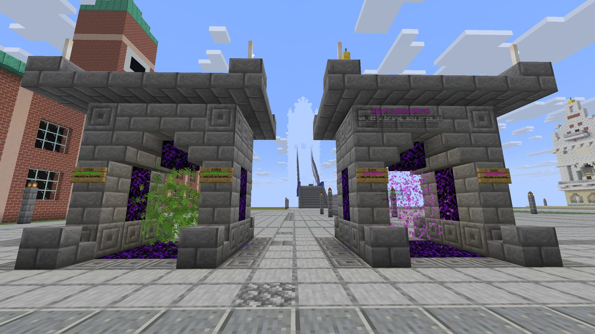
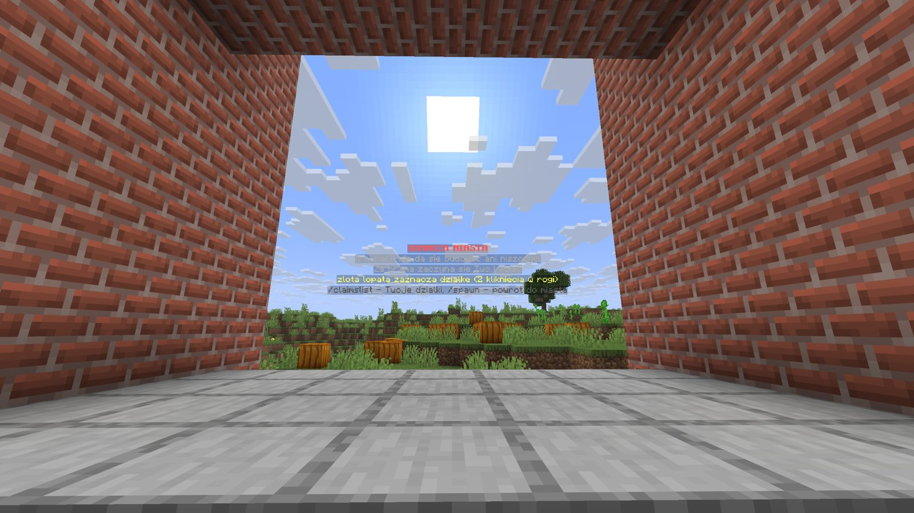
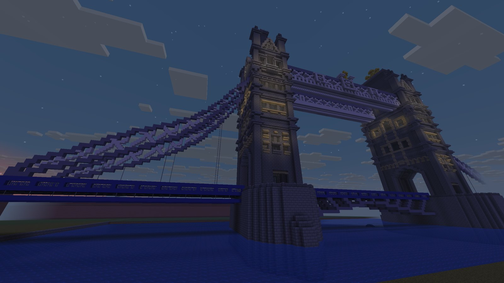

Wszystko na zdjęciach zbudowaliśmy sami, blok po bloku.

Ratusz z RzeszowaNasza własna budowla na Rynku, postawiona z proporcji odczytanych ze zdjęć. Wejście z flagami od strony placu, zegar w szczycie, balkony jak w oryginale.

Zamek na Placu ZamkowymPierwszy kadr każdego nowego gracza. Tu stajesz po wejściu na serwer, z wieżą zegarową na wprost.

KamienicePierzeja kamienic z własnego generatora: wykusze, balkony, okiennice i gzymsy, każda inna.

TwierdzaPokaz wszystkich elementów muru miejskiego naraz: cokół, blanki, przypory, wieżyczki i brama z machikułami.

Dziedziniec twierdzyW środku studnia i latarnie tam, gdzie chodzi się nocą. Na murach patyna z mchu.

Bramy między światamiDwie bramy na Placu Zamkowym: do świata budowania i do osady w survivalu. Każda podpisana, każda z hologramem.

Za bramą zaczyna się survivalWidok z bramy miasta na dzicz. Hologram mówi, jak zaznaczyć działkę złotą łopatą.

Tower BridgeModel autorstwa polstyle z Planet Minecraft, przez nas przebudowany i wstawiony na rzekę. Autor zezwala na dowolne użycie.